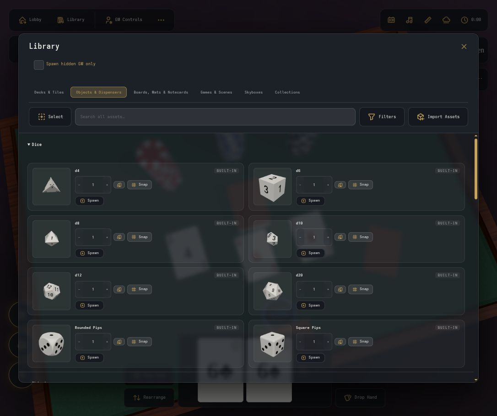

Assets and scenes
Create and manage decks, boards, props, and reusable setups.

Open the library
At a table, choose Library. On a narrow screen, open Menu, then choose Library in the Open section. The same library contains built-in pieces and saved custom assets.
Library access requires Helper, GM, Owner, or site administrator permissions. Helpers can use the permitted deck, object, mat, and notecard sections. Boards, game setups, scenes, and skyboxes require GM access. Creating, editing, publishing, and deleting uploaded assets and scenes requires a site administrator, not just a GM. Notecard templates are a separate account-owned feature; see notecard templates.
- Choose a category: Decks & Tiles, Objects & Dispensers, Boards, Mats & Notecards, Games & Scenes, Skyboxes, or Collections.
- Expand the section you need, such as Decks, Objects, or Scenes.
- Use the search field to find an asset by name. Open Filters and choose All, Custom, or Built-In to narrow the results.
- Use Spawn to place a deck, object, board, or mat, Set up for a built-in game, Load for a scene, or Apply for a skybox.
If a custom asset is missing, check its publication status and the By Collection filters. A hidden collection or disabled Uncollected filter can hide it from your results.
Open Add to Library
As a site administrator, open GM Controls, then Add to Library. On narrow screens, open Menu and find Add to Library in the Room section. These controls are available on the regular game table.
For a separate workspace, open Admin from the lobby, then Library Editor. This opens a workshop table with the same library tools. You do not have to use the workshop to create assets.
Save stores the asset in the library. Save + Spawn also places it on the current table. New library assets are private until an administrator publishes them. Skyboxes use Save + Apply instead of Save + Spawn.
Create an image deck
- Open Add to Library and choose Image Based Decks.
- Click or tap the front-image upload area and select one or more images. You can also drop files onto the upload area with a mouse.
- Choose a back image if you want a custom back. Otherwise the deck uses the default back.
- Enter a Deck name.
- Enable Fit to image to use the first front image's aspect ratio. This also exposes the card thickness and shape controls. Keep the front images at a consistent aspect ratio.
- Choose Save or Save + Spawn.
Find it afterward in Library > Decks & Tiles > Decks. Choose Filters > Custom if you want to hide built-in decks.
Create a text deck
For a text deck, choose Text Based Decks in Add to Library. Enter a
Deck name, optional Back Text, and
Front Text(s). Fronts can be one per line, comma-separated, JSON, or
loaded from a .csv or .txt file. Choose the back and front
colors, then Save or Save + Spawn.
For a standard playing-card deck, use the built-in entries in Library > Decks & Tiles > Decks instead of creating an image or text deck.
Create double-sided tiles
Each tile can have its own front and back image.
- Open Add to Library > Double-Sided Tiles.
- Under Front images (face 1), select the front images for the set.
- Under Back images (face 2, optional), select one back for each front, in the same order. If you provide backs, their count must match the fronts. You can also leave the backs empty.
- Enter a Tile set name. Optionally upload a Stack cover for the stacked set.
- Set Size, Thickness, and Shape. Choose Rounded, Square, or Hexagon. Use images with a consistent aspect ratio; the first front determines the tile proportions.
- Set Concealment to Open or Pouch. For a pouch, choose its sack and string colors.
- Choose Save to keep the set in the library, or Save + Spawn to place it on the table too.
Find the set under Library > Decks & Tiles > Tiles, with Filters > Custom. Flip an individual tile to reveal its other side.
Upload a skybox
Open Add to Library > Skyboxes and choose the form that matches your images:
- Equirectangular (360° panorama): upload one panorama with a 2:1 width-to-height ratio, then enter a Skybox name.
- Cubemap (6 faces): upload six square images into their labeled slots: Top +Y, Left -X, Front +Z, Right +X, Back -Z, and Bottom -Y. All six are required. Enter a Skybox name in this form.
Choose Save to store the skybox, or Save + Apply to also change the current room's background. To use a saved skybox later, open Library > Skyboxes, choose Filters > Custom, and select Apply on its entry.
Upload a dice texture
- Open Add to Library > Dice Textures.
- Choose a Texture image. A seamless square image works best across the die's surface.
- Enter a Texture name, then choose Save.
- Open the Custom menu in the dice box and choose the texture thumbnail to apply it to your dice. You can also inspect an individual die and use its Custom menu.
Saved textures are listed under Library > Objects & Dispensers > Dice, with Filters > Custom. The texture changes the die's surface finish. Saving a texture does not spawn a die or replace its numbered faces. The Custom menu appears when textures are available.
Add a board, mat, or model
Start from GM Controls > Add to Library and choose the tab matching the asset:
- 2D Game Boards: upload the board image, enter a Board name, and configure its dimensions and outline. Choose Save or Save + Spawn.
-
3D Game Boards: choose a
.glbfile and enter a Board name. Set Longest side and configure Collision as Board outline or Custom 3D collider. If you choose a custom collider, create it with Edit custom collider before saving. - Player Mats: upload an image, enter a Mat name, configure the mat, and save it.
-
3D Objects: choose a
.glbfile and an Object name. Set the scale, orientation, and collider. Default material and Recolor material control how the model's materials are used. Choose Preserve model colors if you do not want the model recolored. Save it, with or without spawning a copy.
Find boards and mats under Library > Boards, Mats & Notecards. Find custom objects under Library > Objects & Dispensers > Objects. A custom object's dispenser setup also appears in Dispensers.
Board outlines affect collision; they do not redraw the artwork. Custom colliders must be created before saving when that option is selected.
Edit and publish an asset
- Find the saved asset in Library.
- For decks, boards, mats, and objects, choose Edit to change its saved settings. Use the asset's overflow menu and choose Clone if you want a separate copy with a new name.
- Open the asset's overflow menu and choose Publish to make it available to other users with the required room permissions. Unpublish makes it private again.
- Use Rename or Delete from that same menu when needed.
These management actions require site administrator access. Publishing an asset does not give a player permission to spawn it; room roles still apply. Asset licenses vary. See the project's asset credits before redistributing bundled art.
Save a scene
A scene is a reusable table setup. It omits player hands, turn ownership, the scoreboard, Room Notes, felt color, and skybox. To checkpoint a game with its players, use Save Table; see Saving and resuming.
- As a site administrator, arrange the table, pieces, and decks.
- Choose GM Controls > Save Scene, or Menu > Room > Save Scene on a narrow screen.
- Enter a Scene name.
- Enable Include current lighting if loading this scene should also apply the current lighting settings. Leave it unchecked to preserve the destination table's lighting.
- Choose Save scene.
Find the result under Library > Games & Scenes > Scenes. Publish the saved scene from its overflow menu if other GMs should be able to load it.
Load a scene
- As a GM, owner, or site administrator, open GM Controls > Scenes, or Menu > Room > Scenes. You can also open Library > Games & Scenes > Scenes directly.
- Find the scene and choose Load.
- Confirm only when you are ready to replace the current table. Loading clears its pieces, current and unclaimed hands, and turn state, and replaces its saved checkpoint. Use a separate room to preserve a game in progress.
An administrator can load private scenes. Other GMs can load published scenes. A scene does not restore the players' private hands or turn ownership from a previous session.
Collections and portable assets
Use Library > Collections to organize saved assets. Site administrators manage the collection contents. Publishing a collection does not publish its assets, and deleting a collection keeps the assets themselves. Personal collection visibility filters affect which custom assets you see in the library.
To import a package as an administrator, choose Library > Import Assets, select the ZIP or supported older JSON package, review its contents, enter Name for the new copy, and choose Import private copy. Existing assets are not replaced. Publish imported assets separately when ready.
Custom dice textures, decks and tile sets, boards, mats, skyboxes, and 3D objects have
Export in their overflow menu. Saved collections of supported assets have
a package-export action in Collections. Exports use .ott.zip; import the ZIP
directly without extracting it. Saved model dispenser definitions are included. Notecard
templates and scenes are outside this package format. Scene/game snapshots are separate
from this asset-package workflow; do not assume exporting a collection backs up a running
game.
Sources checked: public/table.html, public/editor/editor-panel.js, server/game/handlers/library.js. Reviewed September 29, 2026 against the working source. Published releases may differ; check the changelog for your version.